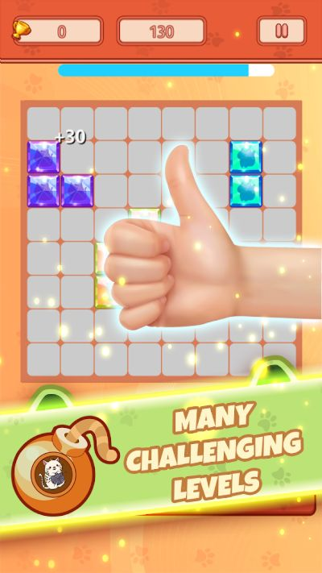
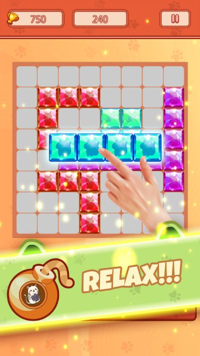
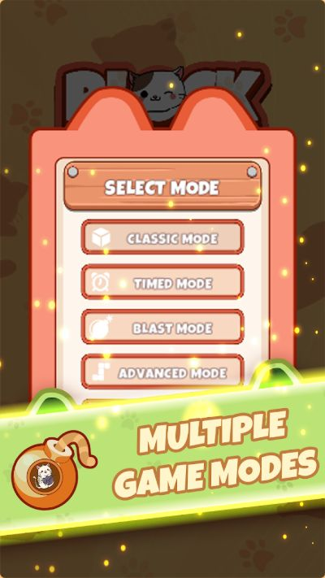
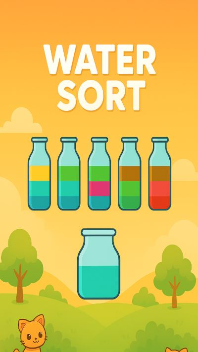
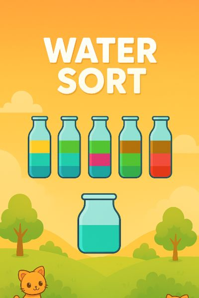
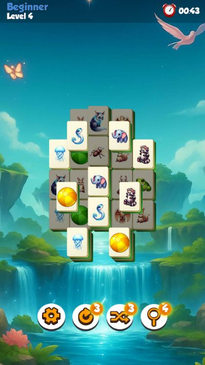
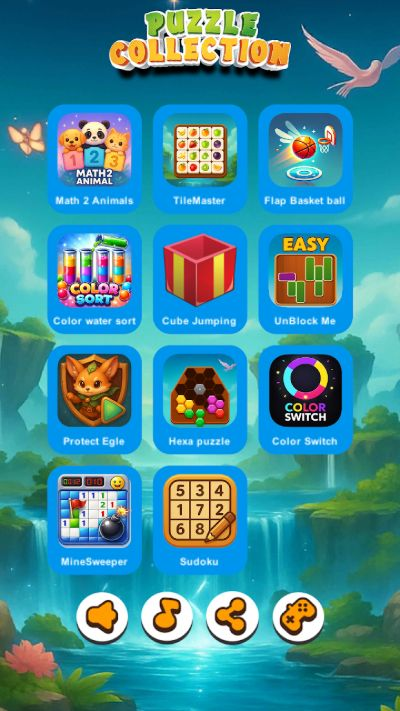
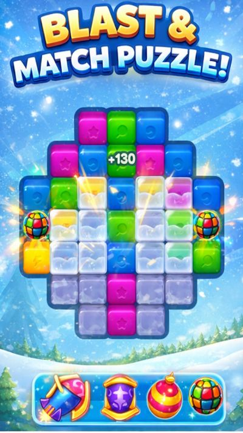
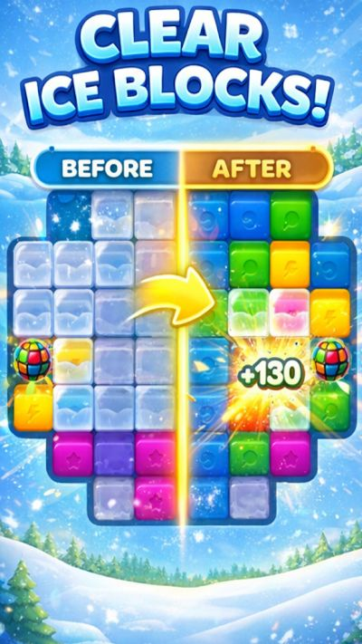

Not every puzzle scratches the same itch. If you are choosing between block puzzle, water sort, and mahjong match, use this quick guide to pick a free Android game that matches how you like to think.
Block puzzle: spatial planning
You place shapes, protect open space, and clear lines. The pleasure is architectural: keep the grid tidy, survive awkward pieces, and chain satisfying clears. Try Block Puzzle Jewel Crystal Cat if you like jewel colors and a cute cat theme with classic brain-training placement.



Block Puzzle Jewel Crystal Cat — levels, relax mode and multiple game modes.
Water sort: logical pouring
You pour colored liquid between tubes until each tube is a single color. Empty tubes are precious working space. The loop is calm, methodical, and strangely addictive. Start with Cat Color Water Sort Puzzle for a friendly color-sort experience.


Cat Color Water Sort Puzzle — pour until every tube holds one color.
Mahjong match: visual scanning
You scan for matching tiles, open choked areas, and clear stages without full traditional mahjong scoring. It rewards patience and pattern spotting. Play DreamTile Animal Mahjong Match for cute animal tiles and relaxing clears.


Mahjong-style tile matching inside 100 Offline Game No Wifi.
Want something more explosive?
If you prefer cascades and board-clear fantasy, jump to Winter Blast Puzzle—a match-and-blast winter puzzle that sits beside these quieter genres.


Winter Blast Puzzle — blast and match through ice blocks.
Still undecided?
Grab a multi-mode sampler like 100 Offline Game No Wifi, then return to a dedicated TTGO title once you know your favorite verb: place, pour, pair, or blast.